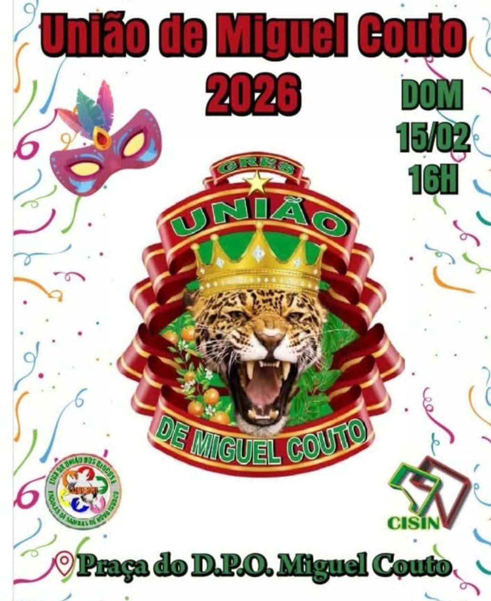

Desfilou no grupo único com enredo inspirado no Egito antigo.
Escola de Samba • LUBESNI
União de Miguel Couto
Uma agremiação de Miguel Couto com história de transformação, título e presença comunitária.
História
História
A União de Miguel Couto nasceu como Arrastão de Miguel Couto e, em 2014, consolidou o nome pelo qual é conhecida hoje. Sua identidade está ligada ao bairro de Miguel Couto e ao circuito carnavalesco de Nova Iguaçu.
O portfólio da LUBESNI registra a Grande Rio como escola madrinha e o tigre como símbolo da agremiação.

Memória e presença cultural
Trajetória
Marcos organizados a partir do acervo institucional e das fontes públicas indicadas nesta página.
Foi campeã do grupo B/acesso do Carnaval Iguaçuano com “Iracema, a Virgem dos Lábios de Mel”.
Desfile registrado em 15/02, às 16h, na Praça do D.P.O. de Miguel Couto, em programação acompanhada pela LUBESNI.
Rastreabilidade
Referências
As fontes abaixo sustentam a história e a trajetória apresentadas nesta página.
Portfólio LUBESNI — pág. 32
Prefeitura de Nova Iguaçu — campeã de 2015
Dossiê Carnaval 2026
Informação institucional
A direção atual está em atualização pela LUBESNI.
Quando um dado ainda não possui confirmação documental recente, ele é apresentado como informação em atualização pela LUBESNI, sem preenchimento por suposição.